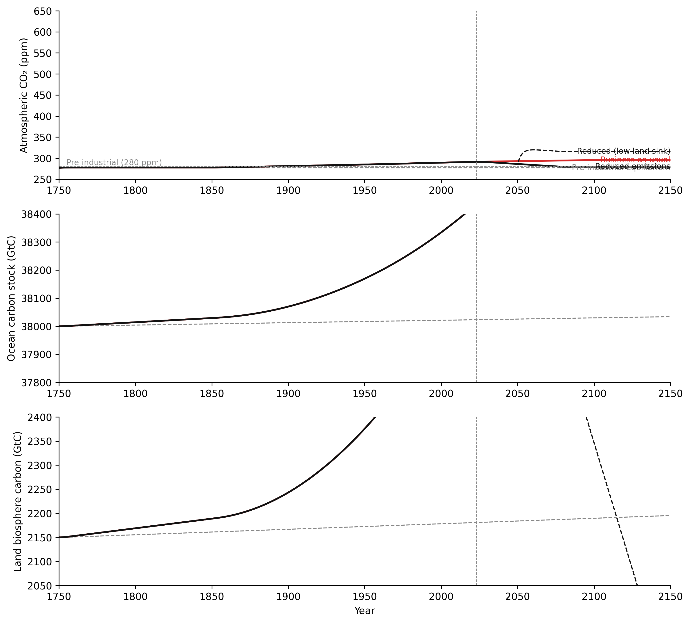

Coupled stocks, biogeochemical cycles, and the feedbacks that run the planet
5.1 The puzzle
In 1958, Charles Keeling installed an infrared gas analyser at the Mauna Loa Observatory in Hawaii and began measuring atmospheric CO₂ (Keeling et al. 1976). His first annual reading: 316 ppm. He kept measuring. He measured through the next year, and the next, and for the next four decades until his death in 2005. The record his team produced — now extended to the present — is called the Keeling Curve. It shows a line rising from left to right.
The puzzle is not the rise. The puzzle is the sawtooth.
Every year, atmospheric CO₂ drops roughly 6–8 ppm between May and October. Then it rises roughly 6–8 ppm between October and May. The drop and the rise are nearly equal. The oscillation is annual, consistent, and global in its signal. Keeling saw it in his first years of data. He knew immediately what it was.
The Northern Hemisphere land biosphere is breathing.
In spring, as trees and grasses leaf out across North America, Europe, and Asia, photosynthesis draws CO₂ out of the atmosphere and fixes it into biomass. The drawdown is measurable from a single station on a Hawaiian volcano because the process is happening on a continental scale. Each autumn, leaves fall. Microbial decomposition and respiration release that carbon back to the atmosphere. By May, the atmospheric stock has returned to roughly where it started.
Atmospheric CO₂ is a stock. Photosynthesis is an outflow from that stock — carbon leaving the atmosphere and entering the land biosphere stock. Respiration and decomposition are inflows — carbon returning from the biosphere to the atmosphere. The sawtooth is not noise. It is a seasonal balancing in the land biosphere stock: a large outflow in spring and summer, a large inflow in autumn and winter, the two flows nearly cancelling on an annual cycle.
The baseline rises because a second flow is present — one that does not cancel. Fossil fuel combustion adds carbon to the atmosphere continuously, at rates far exceeding the capacity of natural sinks to remove it. The atmospheric stock accumulates. Each sawtooth cycle ends slightly higher than the previous one.
Two dynamics in one record: a self-correcting seasonal cycle running simultaneously with a long-run accumulation. One is a balancing structure operating on a biophysical timescale of months. The other is an accumulation driven by a new inflow the system has no pre-existing outflow to match. The chapter applies both structures at planetary scale.
5.2 Earth as coupled subsystems
The Earth system is not one system. It is five partially coupled subsystems, each holding a different set of stocks, operating on different timescales, connected by flows that cross every boundary.
The atmosphere holds greenhouse gas concentrations — CO₂, CH₄, N₂O — and heat content, expressed as the global mean surface energy imbalance. The ocean holds thermal energy (distributed unevenly through depth), dissolved inorganic carbon (~38,000 GtC total), and the volume of North Atlantic Deep Water driving thermohaline circulation. The cryosphere holds ice mass — ice sheets, glaciers, sea ice — and, critically, permafrost carbon: organic material frozen into soils across the Arctic and sub-Arctic at an estimated 1,700 GtC. The biosphere holds biomass and soil carbon, approximately 2,150 GtC in vegetation and soils combined. The lithosphere holds rock-cycle carbon, moving through volcanic outgassing and chemical weathering on timescales of millions of years.
The flows couple them. Ocean–atmosphere CO₂ exchange runs in both directions at approximately 90 GtC/yr each way — a gross flux, nearly balanced, driven by the partial pressure difference across the ocean surface. The water cycle connects atmosphere, ocean, and cryosphere through evaporation (~500,000 km³/yr), precipitation, snowpack accumulation, and melt. Photosynthesis and respiration move carbon between biosphere and atmosphere at roughly 120 GtC/yr each way. Weathering and volcanism exchange carbon between lithosphere and atmosphere at roughly 0.3 GtC/yr — small compared to the biological and ocean fluxes, but the dominant control on atmospheric composition over geological time.
A change in one stock alters the flows that change another. Atmospheric warming reduces sea ice extent, which lowers albedo, which increases ocean heat uptake. Increased ocean heat changes the partial pressure gradient for CO₂ exchange. A change in ocean circulation alters the rate at which deep water carries dissolved carbon away from the surface. The subsystems are not independent. The boundary between them is always a flow.
Response timescales are mismatched, and the mismatch is fundamental. The atmosphere mixes on timescales of weeks to months. Ocean surface temperatures respond to forcing on decadal timescales; the deep ocean circulates on centuries to millennia. Ice sheets accumulate and lose mass on centuries to millennia. The lithosphere operates on millions of years. When a fast stock — the atmosphere — is perturbed, slow stocks — the deep ocean, ice sheets — lag behind. The system carries this lag as committed future change regardless of what happens to the fast stocks next.
The choice of system boundary determines what is visible. Most policy-relevant questions require drawing the boundary wide enough to include ocean–atmosphere coupling. The ocean is the largest active heat sink and the second-largest carbon sink on human timescales. A model that excludes the ocean misses the primary buffer.
Human domain: the Alberta oil sands as a three-stock subsystem
The Athabasca oil sands region provides a compact demonstration of stock-flow dynamics at industrial scale.
Three stocks: bitumen in ground (~166 billion barrels recoverable — the resource stock being depleted), processed bitumen and synthetic crude in pipeline and tank inventory (the intermediate production stock), and tailings pond volume (currently exceeding 1.4 trillion litres — the accumulating waste stock).
Three primary flows connect them: extraction rate (drawing down the in-ground stock), upgrading throughput via Steam-Assisted Gravity Drainage (SAGD) and upgrader capacity (filling the inventory stock), and tailings generation rate (filling the tailings stock as a byproduct of extraction and processing). A fourth flow — water draw from the Athabasca River — feeds the SAGD process at regulated volumes.
The structural feature worth noting: tailings ponds cannot drain faster than water treatment capacity allows. The regulated outflow — treated water returned to the Athabasca system — is slow relative to the generation inflow. The tailings stock accumulates because its outflow valve is constrained. This is the same structure as any large Earth system sink with a slow outflow rate. The mechanism is identical. Only the material differs.
Data domain: Earth observation data as a stock-flow system
Raw satellite telemetry enters the Earth observation pipeline at roughly 2.5 PB/day — the raw data stock. Level-2 and Level-3 geophysical products form a downstream stock filled more slowly: processing and validation take time. A cryosphere change that occurs today appears in a scientifically publishable time series months to years later.
Level-4 scientific products — GRACE terrestrial mass change, MODIS land cover classifications, Landsat glacier area time series — sit further downstream, produced through multi-year reprocessing campaigns. The latency between event and authoritative record can exceed a decade.
The flow latencies between these stocks mean that operational monitoring systems work from a signal that is structurally delayed — the information delay structure discussed in Chapter 2, operating at the scale of a global observation network.
Diagram 4.1 shows the five Earth system stocks and their primary flow connections, with the atmosphere as the central coupling medium through which the other four subsystems exchange heat and carbon.
Figure 4.1. Earth’s five major subsystems as interacting stocks. Double-border rectangles represent stocks; arrows represent material or energy flows. The atmosphere is the central coupling medium — most cross-system flows pass through it or are driven by it. Each stock has a characteristic response time: the atmosphere on years to decades; the deep ocean on centuries to millennia; the lithosphere on millions of years. These mismatched timescales produce the long delays that characterise Earth system behaviour.
5.3 Biogeochemical cycles
5.3.1 Pre-industrial equilibrium
Before the Industrial Revolution, the global carbon cycle had been near equilibrium for millennia. Three boxes dominated the active carbon cycle on timescales relevant to human civilisations.
The atmosphere held approximately 590 GtC — equivalent to 280 ppm CO₂ by volume. The ocean held approximately 38,000 GtC in total, distributed between a warm surface layer and a cold, slow-moving deep ocean. The land biosphere — vegetation and soils combined — held approximately 2,150 GtC, with soils accounting for roughly twice the carbon held in living biomass.
The gross exchange fluxes between these stocks were large and nearly balanced. Ocean and atmosphere exchanged approximately 90 GtC/yr in each direction, driven by the CO₂ partial pressure difference at the ocean surface. The land biosphere and atmosphere exchanged approximately 120 GtC/yr in each direction through photosynthesis and respiration. The net annual exchange was close to zero. No stock accumulated or depleted on centennial timescales.
This is a balancing structure at system level. The stocks are not static — carbon cycles continuously between them. But no stock trends. The system has a natural composition it returns to after perturbation, maintained by the near-cancellation of large gross flows. Chapter 2 characterised this structure as goal-seeking behaviour: the system’s “goal” is pre-industrial atmospheric composition, and the large cyclic flows operate as the corrective mechanism. For millennia, they were sufficient.
5.3.2 The fossil fuel perturbation
A new inflow entered the atmosphere stock in the mid-nineteenth century. Fossil fuel combustion — coal first, then oil and gas — began adding carbon locked in the lithosphere for hundreds of millions of years. The inflow started at roughly 0.5 GtC/yr in 1850. It now runs at approximately 10 GtC/yr and continues to rise.
The existing sinks responded. The ocean absorbs approximately 3 GtC/yr of the anthropogenic pulse — net, above the pre-industrial exchange rate. The land biosphere absorbs approximately 3 GtC/yr. Approximately 4 GtC/yr remains in the atmosphere, accumulating in the atmospheric stock.
The ocean sink cannot scale proportionally with the perturbation. Ocean uptake is limited by gas exchange kinetics and by the speed at which surface water mixes with the deep ocean. As CO₂ dissolves into the surface ocean, the partial pressure difference between atmosphere and ocean surface decreases. A smaller pressure gradient drives a slower uptake rate. The sink weakens as the stock it is filling approaches the stock driving the flow. This is saturation structure: the more carbon the ocean absorbs, the slower it absorbs the next unit.
The result: the atmospheric stock has risen from approximately 590 GtC (280 ppm) to approximately 870 GtC (420 ppm) since pre-industrial times. Chapter 2 named the relevant archetype: overshoot. A fast inflow growing faster than the balancing sinks can respond. The atmosphere overshoots any pre-industrial equilibrium on human timescales.
5.3.3 Industrial metabolism: the oil sands carbon budget
The Alberta oil sands illustrate the overshoot structure at industrial scale. Extracting and upgrading bitumen to synthetic crude requires substantial energy input — primarily natural gas combustion for SAGD steam generation and upgrading heat. This produces lifecycle CO₂ emissions approximately 15–20% higher per barrel than conventional crude.
The tailings pond stock exhibits the same structural behaviour as the atmospheric CO₂ stock. Tailings ponds accumulate because the inflow — tailings generation during extraction and upgrading — exceeds the regulated outflow — treated water returned to the Athabasca watershed. The outflow rate is constrained by water treatment capacity and regulatory approval timescales. The stock accumulates in structural overshoot: a large fast inflow against a small slow outflow. Over 1.4 trillion litres have accumulated.
Both the atmospheric CO₂ stock and the tailings pond stock exhibit the same structural behaviour: fast inflow, slow constrained outflow, accumulation. The specific substance does not change the mechanism. Understanding the mechanism is what allows the pattern to be recognised across domains before the accumulation becomes irreversible.
5.3.4 Remote sensing of carbon fluxes
Several satellite instruments provide observational access to the carbon cycle stocks and flows described above.
MODIS Net Primary Productivity products quantify photosynthetic uptake at 500-metre resolution with 8-day compositing — a proxy for the photosynthesis inflow from atmosphere to land biosphere. GOSAT and OCO-2 measure column-averaged atmospheric CO₂. GRACE and GRACE-FO measure terrestrial water storage and ice mass — connected downstream stocks in the cryosphere and groundwater systems.
Each instrument measures a different stock at a different spatial resolution and temporal cadence. Producing a coherent picture of the full carbon cycle from these data requires matching units, co-registering spatial grids, propagating measurement uncertainties, and validating against ground-truth networks of eddy covariance flux towers. This is the data analogy to the Earth system model: multiple partial observations of coupled stocks, integrated into a single consistent view of the system state.
Diagram 4.2 shows the three active carbon stocks — atmosphere, ocean, and land biosphere — and the exchange flows between them, with the fossil fuel emission as the new inflow that disrupts the pre-industrial near-equilibrium.
Figure 4.2. The 3-box carbon cycle. Double-border rectangles are stocks; rounded rectangles are external sources. Pre-industrial: gross atmosphere-ocean and atmosphere-land flows are nearly equal, and the atmospheric stock is stable at ~280 ppm. Perturbation: anthropogenic emissions add ~10 GtC/yr to the atmosphere — a new inflow with no natural outflow at that rate. Ocean and land uptake absorb roughly half; the remainder accumulates in the atmosphere. The atmospheric stock has risen from 590 GtC (~280 ppm) to ~870 GtC (~420 ppm) as a result.
Earth observation data pipelines
The carbon flux data described above — MODIS, GOSAT, OCO-2, GRACE — arrives through a chain of processing steps that is itself a stock-flow system. Raw telemetry enters a raw data stock; radiometric correction and geolocation produce Level-1 products; retrieval algorithms produce Level-2 geophysical quantities; multi-year reprocessing campaigns produce the authoritative Level-4 scientific records.
WH Data Engineering Ch 3 (Pipelines and ETL) and Ch 5 (Streaming) covers the engineering architecture that keeps these flows operational — including the handling of calibration drift, orbit changes, and sensor retirement that create discontinuities in long records. A cryosphere time series that spans a sensor handover (GRACE to GRACE-FO, 2017–2018) is a data engineering problem as much as a glaciology problem.
5.4 Climate feedbacks
Double the pre-industrial CO₂ concentration in the atmosphere and the direct radiative effect — less outgoing longwave radiation escaping to space — would warm the surface by approximately 1°C. The observed and modelled response to a CO₂ doubling is 2.5–4°C (IPCC 2021). The difference is feedbacks.
A direct forcing changes one variable. Feedbacks amplify or dampen the initial change as other variables respond. The total temperature response is the direct forcing multiplied by a feedback factor — the net effect of all active feedback loops, reinforcing and balancing, operating simultaneously. Four feedbacks carry most of the weight: ice-albedo, water vapour, ocean heat uptake, and permafrost carbon release. They operate on different timescales, through different stocks, and they do not all point in the same direction.
5.4.1 Ice-albedo feedback
The ice-albedo feedback appeared in Chapter 2 as the introductory example of a reinforcing loop. In planetary context, it operates primarily at the poles, where surface albedo differences between ice and open ocean or land are largest. Sea ice reflects 80–90% of incident solar radiation. Open ocean reflects roughly 6%. As sea ice retreats, the ocean surface absorbs more shortwave radiation, warms, and melts more ice. The loop has no internal corrective mechanism — it is reinforcing throughout.
The feedback is operating in the observed record. Arctic September sea ice extent has declined by approximately 40% since satellite observations began in 1979 (Stroeve et al. 2012). The Arctic is warming at roughly four times the global mean rate (IPCC 2021), partly because the ice-albedo feedback is active there and not in the tropics.
5.4.2 Water vapour feedback
The water vapour feedback is the largest single amplifier in the climate system, responsible for roughly doubling the direct CO₂ warming signal.
The Clausius-Clapeyron relation sets the rate: a warmer atmosphere holds approximately 7% more water vapour per degree Celsius of warming. Water vapour is itself a greenhouse gas. It absorbs outgoing longwave radiation and re-radiates a portion of it downward, adding to the surface energy budget. The loop: higher surface temperature → more evaporation → higher atmospheric water vapour concentration → stronger downwelling longwave radiation → higher surface temperature. Every link carries a positive sign. No minus signs. This is a reinforcing loop (R).
The water vapour feedback operates on timescales of days to weeks — far faster than ocean heat content or ice volume.
Diagram 4.3 shows the water vapour reinforcing loop: warmer surface temperatures drive increased atmospheric water vapour, which absorbs outgoing radiation and re-radiates it downward, reinforcing the surface warming.
graph LR
ST["Surface\nTemperature"] -->|"+"| WV["Atmospheric\nWater Vapour"]
WV -->|"+"| DLW["Downwelling\nLongwave\nRadiation"]
DLW -->|"+ [R]"| ST
style ST fill:#f5f5f5,stroke:#111111,stroke-width:2px
style WV fill:#fff3f3,stroke:#d52a2a,stroke-width:2px
style DLW fill:#f5f5f5,stroke:#111111,stroke-width:2px
Figure 4.3. Water vapour reinforcing feedback loop. Warmer surface temperatures increase atmospheric water vapour content (Clausius-Clapeyron: ~7% per 1°C). Water vapour absorbs outgoing longwave radiation and re-radiates it downward, further warming the surface. Zero − signs → reinforcing (R). This feedback roughly doubles the direct warming from CO₂ alone and operates on timescales of days to weeks — far faster than the ice-albedo feedback.
5.4.3 Ocean heat uptake
The ocean’s thermal mass is the largest active balancing feedback in the climate system on human timescales. The ocean absorbs approximately 90% of the excess heat that accumulates in the climate system from anthropogenic forcing. Without it, surface temperatures would be rising far faster than observed.
The mechanism: the ocean surface has a vastly larger heat capacity than the atmosphere. Incoming energy is distributed through a mixed layer of roughly 50–200 metres depth on seasonal timescales, and through the full water column on centennial timescales. This heat uptake moderates atmospheric temperature rise by providing a large slow stock into which the forcing is partially absorbed.
But the heat does not disappear. It warms the ocean — driving thermal expansion and sea level rise — and creates a committed warming: the surface atmosphere has not yet warmed to equilibrium with current atmospheric CO₂, because the ocean is still absorbing heat that has not yet been released back to the surface. Additional warming is locked into the system regardless of future emission trajectories. The delay in this balancing loop is measured in centuries for the deep ocean.
5.4.4 Permafrost methane
Permafrost covers approximately 25% of the Northern Hemisphere land surface. It stores approximately 1,700 GtC of organic material accumulated and frozen over millennia (Schuur et al. 2015). This is more than twice the carbon currently in the atmosphere.
As Arctic temperatures rise — currently at four times the global mean rate — permafrost thaws. Microbial decomposition activates in previously frozen organic material, producing CO₂ under aerobic conditions and methane (CH₄) under anaerobic conditions. Methane is approximately 80 times more potent than CO₂ as a greenhouse gas over a 20-year horizon.
The feedback loop: Arctic warming → permafrost thaw → microbial decomposition → CH₄ and CO₂ emissions → additional atmospheric forcing → further Arctic warming. Every link carries a positive sign. This is a reinforcing loop (R). The tipping point risk: at sufficient Arctic warming, the loop could become self-sustaining — carbon release continues regardless of human emission reductions.
In the Alberta context, the Cold Lake and Peace River oil sands regions sit in or adjacent to discontinuous permafrost zones. SAGD operations generate thermal plumes: volumes of heated ground extending outward from steam injection wells. The interaction between industrial thermal perturbation and climate thermal perturbation in these regions is being actively studied. The two stresses are not independent — they operate on the same permafrost stock, through the same thermal physics.
Diagram 4.4 shows the permafrost carbon tipping point: the ~1,700 GtC Arctic soil carbon stock, the warming-driven thaw-and-decomposition reinforcing loop, and the external stress structure that applies the generic tipping point form from Chapter 3 directly to the Arctic carbon system.
graph LR
PF["Permafrost\nCarbon Stock\n(~1,700 GtC)"] -->|"+"| FR["Frozen State\nStability"]
FR -->|"− [B]"| PF
AW["Arctic\nWarming"] -->|"−"| FR
AW -->|"+"| TH["Thaw Rate"]
TH -->|"+"| GR["CH₄ + CO₂\nRelease"]
GR -->|"+ [R]"| AW
style PF fill:#fff3f3,stroke:#d52a2a,stroke-width:2px
style FR fill:#f5f5f5,stroke:#111111,stroke-width:2px
style AW fill:#f5f5f5,stroke:#111111,stroke-width:2px
style TH fill:#f5f5f5,stroke:#111111,stroke-width:2px
style GR fill:#f5f5f5,stroke:#111111,stroke-width:2px
Figure 4.4. Permafrost-methane tipping point structure. The frozen permafrost state is maintained by a balancing feedback (B): cold Arctic temperatures suppress microbial decomposition. Arctic warming weakens this balancing loop and activates a reinforcing loop (R): thaw → CH₄ and CO₂ release → additional greenhouse warming → further thaw. The permafrost carbon stock (~1,700 GtC) is more than double the current atmospheric carbon content. If the reinforcing loop becomes self-sustaining, carbon release continues independently of further human emissions.
5.4.5 Oil sands as feedback amplifier
The loop structure connecting oil sands production to the climate system it operates within can be drawn explicitly.
Oil sands production requires natural gas combustion for SAGD steam generation and bitumen upgrading. That combustion adds CO₂ to the atmosphere. Atmospheric CO₂ drives Arctic and regional warming. Regional warming reduces Rocky Mountain snowpack — the Athabasca River’s primary seasonal input. Reduced snowpack produces lower river flows and longer low-flow periods. Regulatory frameworks restrict oil sands water withdrawals during low-flow periods. Tighter water availability creates operational pressure toward water-recycling technology and deeper SAGD configurations, which tend to increase energy intensity per barrel — requiring more natural gas to extract and process each barrel of bitumen. More natural gas combustion per barrel returns to the top of the loop.
This is not moral framing. It is the loop structure that operating companies, regulators, and water managers in the Athabasca region are navigating. The loop is reinforcing in the warming direction, and the feedback runs through a regional hydrology system that is already showing measurable change.
Feedback parameters and climate sensitivity
The feedback factor concept — total response = direct forcing × amplification — has a precise mathematical form. The sum of all feedback parameters (in W/m²/K) determines whether the climate system is stable (negative sum → balancing) or unstable (positive sum → reinforcing). Equilibrium Climate Sensitivity (ECS, the warming per CO₂ doubling) is the inverse of the net feedback parameter.
WH Maths Vol 8, Ch 1 (Control, Feedback, and Stability) develops this as a transfer function problem: the climate system as a linear feedback system with a gain, a delay, and a set of eigenvalues that determine whether oscillations dampen or grow. The connection between the loop diagrams in this chapter and the mathematical machinery of control theory runs through that treatment.
5.5 Earth system tipping points
The tipping point structure from Chapter 3 — a balancing feedback weakening as a reinforcing one strengthens — applies directly to three Earth systems that have received the most attention in current research: the Atlantic Meridional Overturning Circulation, the West Antarctic Ice Sheet, and the Amazon forest (Lenton et al. 2008). Each is a system with a known self-sustaining current state, an identifiable external stress, and a reinforcing loop that takes over past a threshold.
5.5.1 Atlantic Meridional Overturning Circulation
The Atlantic Meridional Overturning Circulation (AMOC) is a system of ocean currents transporting warm, salty surface water northward from the subtropics to the North Atlantic, and returning cold, dense deep water southward at depth. The Gulf Stream is its most familiar surface expression. The system moves roughly 17–18 Sverdrups in its current configuration.
The current state is self-sustaining through a balancing loop. Warm subtropical surface water moves northward and evaporates along the way, increasing its salinity. By the time this water reaches the Norwegian Sea and the Labrador Sea, it is both cold and saline. High-salinity, cold water is dense. It sinks to the deep ocean — deep water formation — and returns southward at depth, completing the circulation. The sinking at the northern end draws more warm surface water northward. The density contrast between sinking North Atlantic water and the surrounding ocean is the engine that keeps the loop running.
Figure 4.6 shows the AMOC self-sustaining balancing loop — warm saline surface water flowing north, cooling and sinking, returning south at depth — and the Greenland meltwater freshwater stress that reduces surface salinity and weakens the density-driven sinking that keeps the circulation running.
graph LR
AMOC["AMOC\nStrength"] -->|"+"| HT["Northward\nHeat Transport"]
HT -->|"+"| EVAP["North Atlantic\nEvaporation"]
EVAP -->|"+"| SAL["Surface\nSalinity"]
SAL -->|"+ [B]"| AMOC
FW["Greenland\nMeltwater"] -->|"−"| SAL
style AMOC fill:#f5f5f5,stroke:#111111,stroke-width:2px
style HT fill:#f5f5f5,stroke:#111111,stroke-width:2px
style EVAP fill:#f5f5f5,stroke:#111111,stroke-width:2px
style SAL fill:#f5f5f5,stroke:#111111,stroke-width:2px
style FW fill:#fff3f3,stroke:#d52a2a,stroke-width:2px
Figure 4.6. AMOC self-sustaining balancing loop and freshwater stress. The thermohaline circulation maintains itself through a balancing loop (B): AMOC transports heat northward → increases evaporation → increases surface salinity → maintains the density contrast that drives AMOC. Greenland meltwater dilutes North Atlantic surface salinity, weakening the loop. Past a threshold freshwater forcing, the density contrast drops below the level required to sustain deep water formation, and AMOC tips to a much weaker state.
The external stress is freshwater input from the Greenland Ice Sheet. As Greenland loses mass — currently at roughly 280 Gt/yr — meltwater enters the North Atlantic as freshwater. Freshwater is less dense than saltwater. It dilutes surface salinity in precisely the region where high salinity is required to drive deep water formation. Reduced salinity means reduced density contrast. Deep water formation weakens. AMOC slows.
The reinforcing collapse loop: a weaker AMOC transports less warm surface water northward. Less northward heat transport means a cooler North Atlantic. A cooler sea surface evaporates less. Less evaporation means lower salinity. Lower salinity weakens deep water formation further. AMOC weakens again.
The consequences extend far beyond the North Atlantic. Western Europe would cool by several degrees relative to a world with a functioning circulation — regional cooling superimposed on global warming. The last time AMOC was in a significantly weakened state was the Younger Dryas, approximately 12,000 years ago.
Current evidence indicates AMOC is at its weakest state in at least 1,000 years based on proxy reconstructions (Caesar et al. 2021). Critical slowing down signatures — increased variance in sea surface temperature proxies, reduced recovery rate after perturbation — are detectable in the observational record (Scheffer et al. 2009). Exercise 3.3 introduced this concept; AMOC is one of the systems to which it is most directly applicable.
5.5.2 West Antarctic Ice Sheet
The West Antarctic Ice Sheet (WAIS) holds approximately 3.3 million km³ of ice. Full discharge into the ocean would raise global mean sea level by approximately 3.3 metres (Rignot et al. 2014). It would not happen instantaneously — the question is the timescale over which it becomes committed.
The current stable state depends on ice shelves: floating extensions of the grounded ice sheet that extend over the ocean. Ice shelves provide back-pressure at the grounding line — the boundary between ice grounded on bedrock and floating ice. This back-pressure acts as a buttress, slowing the seaward flow of grounded ice.
The external stress is Circumpolar Deep Water intrusion. CDW is a warm water mass that has been increasingly observed flowing beneath the ice shelves of the Amundsen Sea sector. Thwaites Glacier and Pine Island Glacier sit here. CDW drives basal melting from below, thinning ice shelves from their base. As ice shelves thin, they provide less buttressing. Grounding lines retreat.
The tipping mechanism is Marine Ice Sheet Instability (MISI). The critical structural feature of the WAIS is that the bedrock beneath it deepens inland — the bed slopes backward from the coast. If the grounding line retreats into deeper water, the ice face at the grounding line is taller. A taller ice face drives faster ice flow, producing more calving and faster discharge. More discharge causes the grounding line to retreat further into deeper water — where the ice face is taller still. The loop is reinforcing, and there is no natural restoring force on centennial timescales once it activates.
For Thwaites Glacier specifically, current observations place the grounding line at or near the zone where MISI would become self-sustaining. What is not in serious dispute is the structure: the instability mechanism is real, the stress is observed, and the question is when the threshold is crossed rather than whether the mechanism exists.
A partial or full WAIS collapse would contribute 3 metres or more to global mean sea level over centuries to millennia. The upper end of the rate range — rates fast enough to matter for coastal infrastructure with multi-decade planning horizons — is not well constrained. This is a known unknown in the operational sense: the scenario is physically plausible, the probability is uncertain, and the consequence is severe enough to warrant inclusion in planning regardless.
5.5.3 Amazon forest dieback
The Amazon basin holds approximately 150–200 GtC in above-ground biomass — the largest tropical forest carbon stock on Earth (Nobre et al. 2016). It is also a system that partly generates its own climate.
The self-sustaining loop: forest cover drives high rates of evapotranspiration, releasing water vapour that forms clouds and precipitation downwind. This moisture recycling — where forest-generated precipitation feeds forest growth further into the continental interior — maintains rainfall levels across a region that would otherwise be drier. The forest makes rain. The rain makes the forest.
Two external stresses are simultaneously active. Deforestation has removed approximately 20% of the Amazon’s original forest area, primarily in the southern and eastern periphery. Regional warming and drought push additional moisture stress onto remaining forest. Both stresses reduce the moisture recycling that sustains the forest.
The threshold estimate: if deforestation combined with regional drying reduces forest cover below roughly 20–25% of original extent, the moisture recycling loop weakens below the level required to sustain forest cover in the eastern Amazon. A reinforcing dieback loop activates: reduced forest cover generates less evapotranspiration, which reduces regional precipitation, which increases tree mortality through drought stress, which reduces forest cover further. The system tips toward a savanna state.
The end state for the eastern Amazon under dieback would be savannification. Carbon release in that transition: approximately 50–90 GtC — a significant additional forcing pulse on the global carbon cycle.
Human domain: Athabasca River as a local tipping point
The Rocky Mountain snowpack is the primary seasonal input to the Athabasca River. Alberta’s Athabasca River Water Management Framework establishes tiered flow thresholds that restrict oil sands water withdrawals during low-flow periods to protect aquatic ecosystem function.
Regional warming is shifting the snowpack. Peak snowpack has declined across the Rocky Mountain headwaters region. Melt timing has advanced. Low-flow periods are lengthening.
The tipping structure is recognisable. A seasonal balancing loop — snowpack accumulation through winter, melt through spring, river flow through summer — is being weakened by a warming stress that reduces total snowpack and advances melt timing. If a sustained multi-year period of low snowpack coincides with extended low-flow regulation, in-situ production volumes would be constrained regardless of bitumen price signals. The stock that fails is not bitumen or processing throughput — it is river flow.
Data domain: satellite signatures of tipping proximity
GRACE and GRACE-FO monthly mass anomaly data (Tapley et al. 2004) for Greenland and West Antarctica show accelerating mass loss rates over the satellite record (Mouginot et al. 2019). The acceleration is the observational signature consistent with MISI propagation at Thwaites and Pine Island Glacier — though separating dynamic ice loss from surface mass balance variability requires careful data analysis.
NDVI and EVI time series from MODIS over the deforested margins of the Amazon show increased variance and decreased seasonal amplitude in high-deforestation regions — a statistical signature consistent with declining forest resilience. Both applications require long, consistent satellite records spanning decades, rigorous cross-sensor calibration at instrument handover points, and careful statistical separation of climate variability from structural trend. The critical slowing down signal from Chapter 3, Exercise 3.3, is what researchers are attempting to extract from these time series.
Remote sensing of Earth system change
The tipping elements described above are detectable — partially — from space. GRACE/-FO measures ice mass change for Greenland and Antarctica; Landsat and Sentinel provide glacier terminus position and area; MODIS and Landsat provide vegetation index time series for the Amazon.
WH Computational Geography Parts 2 and 4 (Earth Observation and Hazards) covers the specific satellite sensors, retrieval methods, and time series analysis techniques for each of these monitoring applications. The systems thinking framework explains why these systems are approaching tipping points; the computational geography toolkit provides the observational evidence.
5.6 Simulating the carbon cycle: three stocks, one perturbation
Run the simulation below before reading the exercises. The three scenarios differ only in the emission trajectory, and the key result is not a bug: when emissions fall, the atmospheric stock does not empty. It accumulates more slowly. The atmosphere is a stock with a constrained outflow, not a pipe that clears when the inflow stops. The model makes this visible in a way that prose cannot.
Code
"""3-box carbon cycle — Chapter 4. Euler method: atmosphere (A), ocean (O), land biosphere (L) stocks. Anthropogenic CO₂ emission added to atmosphere from 1750 onward. Three scenarios: equilibrium, BAU, reduced."""import numpy as npimport matplotlib.pyplot as plt# Named constants — pre-industrial initial stocks (GtC)A0 =590.0# atmosphereO0 =38000.0# oceanL0 =2150.0# land biosphere# Pre-industrial equilibrium flows (GtC/yr)F_OA =90.0# ocean → atmosphere outgassing (constant)F_LA =120.0# land → atmosphere respiration (constant)F_W =0.2# weathering + volcanism into atmosphere (constant)k_AO = F_OA / A0 # atmosphere → ocean uptake rate constantk_AL = F_LA / A0 # atmosphere → land photosynthesis rate constant# Integration parametersdt =1.0# yearsYEAR_START =1750YEAR_END =2150PPM_CONV =2.13# 1 ppm = 2.13 GtC# -- Emission trajectory -------------------------------------------------------def emissions(year, scenario):"""Return anthropogenic CO₂ emission (GtC/yr) for a given year and scenario."""if scenario ==0:return0.0if year <1850:return0.5if year <1950:return0.5+ (year -1850) /100.0* (6.0-0.5)if year <2023:return6.0+ (year -1950) /73.0* (11.0-6.0)if scenario ==1: # BAUif year <=2100:return11.0+ (year -2023) /77.0* (14.0-11.0)return14.0if scenario in (2, "2b"): # reduced emissionsif year <=2075:return11.0+ (year -2023) /52.0* (2.0-11.0)return2.0return0.0# -- Run simulation for each scenario -----------------------------------------scenarios = {"eq": {"id": 0, "color": "#888888", "ls": "--", "lw": 1.0},"bau": {"id": 1, "color": "#d52a2a", "ls": "-", "lw": 1.8},"red": {"id": 2, "color": "#111111", "ls": "-", "lw": 1.8},"2b": {"id": "2b", "color": "#111111", "ls": "--", "lw": 1.2},}years = np.arange(YEAR_START, YEAR_END +1, dt)results = {}for name, cfg in scenarios.items(): A, O, L = A0, O0, L0 A_arr, O_arr, L_arr = [A], [O], [L]for year in years[:-1]:# Land sink rate constant — reduced 20% from 2050 in scenario 2b k_al = k_AL * (0.80if (name =="2b"and year >=2050) else1.0) E = emissions(year, cfg["id"]) dA = F_OA - k_AO * A + F_LA - k_al * A + F_W + E dO = k_AO * A - F_OA dL = k_al * A - F_LA A += dA * dt O += dO * dt L += dL * dt A_arr.append(A) O_arr.append(O) L_arr.append(L) results[name] = {"A": np.array(A_arr), "O": np.array(O_arr), "L": np.array(L_arr)}# -- Figure: 3 panels (rows) --------------------------------------------------fig, axes = plt.subplots(3, 1, figsize=(10, 9), dpi=150)anno = {"eq": "Pre-industrial equilibrium","bau": "Business-as-usual","red": "Reduced emissions","2b": "Reduced (low land sink)",}# Panel 1 (top): atmospheric CO₂ in ppmax = axes[0]for name, cfg in scenarios.items(): ppm = results[name]["A"] / PPM_CONV ax.plot(years, ppm, color=cfg["color"], linestyle=cfg["ls"], linewidth=cfg["lw"]) ax.annotate(anno[name], xy=(YEAR_END, ppm[-1]), fontsize=8, color=cfg["color"], ha="right", va="center")ax.axhline(280, color="#888888", linestyle="--", linewidth=0.7)ax.annotate("Pre-industrial (280 ppm)", xy=(1755, 280), fontsize=8, color="#888888", va="bottom")ax.axvline(2023, color="#888888", linestyle="--", linewidth=0.7)ax.set_xlim(YEAR_START, YEAR_END)ax.set_ylim(250, 650)ax.set_ylabel("Atmospheric CO\u2082 (ppm)")ax.spines["top"].set_visible(False)ax.spines["right"].set_visible(False)ax.grid(False)# Panel 2 (middle): ocean carbon stock (GtC)ax = axes[1]for name, cfg in scenarios.items(): ax.plot(years, results[name]["O"], color=cfg["color"], linestyle=cfg["ls"], linewidth=cfg["lw"])ax.annotate("Rising ocean carbon \u2192 ocean acidification", xy=(2080, results["bau"]["O"][years ==2080][0]), xytext=(2040, 38150), fontsize=8, color="#444444", arrowprops=dict(arrowstyle="->", color="#444444", lw=0.8), ha="left")ax.axvline(2023, color="#888888", linestyle="--", linewidth=0.7)ax.set_xlim(YEAR_START, YEAR_END)ax.set_ylim(37800, 38400)ax.set_ylabel("Ocean carbon stock (GtC)")ax.spines["top"].set_visible(False)ax.spines["right"].set_visible(False)ax.grid(False)# Panel 3 (bottom): land biosphere carbon stock (GtC)ax = axes[2]for name, cfg in scenarios.items(): ax.plot(years, results[name]["L"], color=cfg["color"], linestyle=cfg["ls"], linewidth=cfg["lw"])if name in ("red", "2b"): ax.annotate(anno[name], xy=(YEAR_END, results[name]["L"][-1]), fontsize=8, color=cfg["color"], ha="right", va="center")ax.axvline(2023, color="#888888", linestyle="--", linewidth=0.7)ax.set_xlim(YEAR_START, YEAR_END)ax.set_ylim(2050, 2400)ax.set_ylabel("Land biosphere carbon (GtC)")ax.set_xlabel("Year")ax.spines["top"].set_visible(False)ax.spines["right"].set_visible(False)ax.grid(False)plt.tight_layout(pad=1.5)plt.savefig("_assets/ch04-carbon-cycle.png", dpi=150, bbox_inches="tight")plt.show()

Figure 5.1: Figure 4.5. 3-box carbon cycle model: atmosphere, ocean, and land biosphere under three emission scenarios, 1750–2150. Top: atmospheric CO₂ continues rising in all non-zero-emission scenarios. The reduced-emission scenario slows accumulation but does not return CO₂ to pre-industrial levels — the atmospheric stock accumulates more slowly, not in reverse. Centre: ocean carbon stock grows in all scenarios, reflecting ongoing ocean acidification risk. Bottom: land biosphere carbon with land sink uncertainty (dashed) from 2050. The key result: atmospheric overshoot reflects cumulative stock change, not just current emission rate.
What to try
Set emissions to zero in 2050 in Scenario 2. Does atmospheric CO₂ immediately start falling? Why or why not? How many years does it take for the atmospheric stock to begin declining? What controls that timescale?
Change k_AO to 0.80 × its baseline value from 2050 onward — simulating ocean sink saturation as the ocean surface acidifies. What happens to the atmospheric stock trajectory? How does this compare to the land sink saturation uncertainty in Panel 3?
Map this model to a data pipeline system. In a large satellite Earth observation processing pipeline: what plays the role of the atmosphere stock? The ocean stock? The anthropogenic emission flow? What would “ocean acidification” look like in a data pipeline context — a stock accumulating something that degrades future processing capacity? Write down the analogy explicitly before continuing.
Figure 4.5. 3-box carbon cycle model under three emission scenarios, 1750–2150. Top: atmospheric CO₂ (ppm) — even aggressive emissions reduction slows accumulation rather than reversing it on this timescale, because the stock integrates all past emissions. Centre: ocean carbon stock (GtC) — continues growing in all scenarios, corresponding to ongoing acidification. Bottom: land biosphere carbon with land sink uncertainty (dashed) from 2050 onward. The model demonstrates why “net-zero emissions” stabilises the atmospheric stock — it does not reduce it.
5.7 Exercises
4.1 — Carbon cycle stock-flow
Pre-industrial carbon stocks: atmosphere = 590 GtC, ocean = 38,000 GtC, land biosphere = 2,150 GtC. An anthropogenic emission inflow of 4 GtC/yr is added to the atmospheric stock, with no change to any existing outflow.
Ocean and land biosphere sinks together absorb 6 GtC/yr of the anthropogenic pulse, leaving a net accumulation rate of 4 GtC/yr in the atmosphere. Using the response time approximation τ = S / |F_net| from Chapter 1, estimate how many years it would take for the atmospheric stock to increase by 10% from its pre-industrial value.
Suppose the anthropogenic emission doubled from 4 GtC/yr to 8 GtC/yr, and the ocean and land biosphere sinks remained at 6 GtC/yr combined. What would happen to the ocean stock over time if the additional atmospheric CO₂ also increased the ocean uptake sink — but only by 1 GtC/yr due to the saturation mechanism? Describe the direction and rate of change in qualitative terms.
4.2 — Feedback identification
Choose two feedbacks from this chapter — one reinforcing and one balancing. For each:
Draw a causal loop diagram using standard notation (+ and − links, R or B loop label).
Count the − signs in the loop and verify the loop type is consistent with the rule from Chapter 2.
Identify which stock the loop primarily acts on and what the timescale of the feedback response is.
4.3 — Tipping point mapping
Choose one of the three tipping elements described in Section 4.4 (AMOC, West Antarctic Ice Sheet, or Amazon forest dieback).
Draw a causal loop diagram showing: (i) the self-sustaining loop that maintains the current state, (ii) the external stress, and (iii) the reinforcing loop that takes over after the threshold.
Identify which variable in your diagram corresponds to the System State node in Figure 3.1.
What observable variable would you monitor to detect that the system’s resilience is declining before the tipping point is crossed? Justify your choice.
4.4 — Committed warming
Atmospheric CO₂ is held constant at 420 ppm — no further human emissions, no further increase in atmospheric concentration.
Would surface temperatures continue to rise, hold steady, or fall over the following decades? Explain your answer using the ocean stock’s response time and the committed warming it implies.
What does this reveal about the relationship between the emission trajectory (the inflow to the atmosphere) and the temperature trajectory (the response to the atmospheric stock)? Why does the response lag behind the forcing?
4.5 — Oil sands loop analysis
Section 4.3 describes the oil sands-as-feedback-amplifier loop connecting production, emissions, regional warming, Athabasca River hydrology, and water allocation constraints.
Draw the full causal loop diagram. Label every link as + or −. Identify all complete loops and label each as R or B.
Is the overall loop from oil sands production back to oil sands production reinforcing or balancing? What does this tell you about the long-run direction of the feedback?
Identify one link where a change in technology, regulation, or infrastructure could convert a reinforcing element into a balancing one. Describe specifically what the change would be and what new link or modified link it would introduce.
4.6 — Data pipeline resilience
A satellite that has been providing monthly ice mass data for 15 years is decommissioned. Its replacement will not launch for 18 months.
Using the resilience framework from Chapter 3, identify the balancing feedback that this data stream supports in a downstream application of your choice. What is the corrective action the feedback enables?
What is the consequence of severing this feedback loop for 18 months? Distinguish between consequences for the monitored system (the ice sheet) and for the model products that use ice mass data as a forcing or validation input.
What monitoring or modelling strategies could be used to maintain partial feedback function during the data gap? Identify at least two and describe their limitations.
Status: draft — complete chapter: Keeling Curve puzzle, five Earth system sections, six Mermaid/flowchart diagrams, 3-box carbon cycle simulation (four scenarios to 2150), three cross-link callouts, six exercises.
Caesar, Levke, Gerard D. McCarthy, David J. R. Thornalley, Niamh Cahill, and Stefan Rahmstorf. 2021. “AMOC Weakening Since 1800 CE Detected in the Proxy Record.”Nature Geoscience 14: 118–20. https://doi.org/10.1038/s41561-021-00699-z.
IPCC. 2021. Climate Change 2021: The Physical Science Basis. Contribution of Working Group i to the Sixth Assessment Report of the Intergovernmental Panel on Climate Change. Edited by V. Masson-Delmotte, P. Zhai, A. Pirani, et al. Cambridge University Press. https://doi.org/10.1017/9781009157896.
Keeling, Charles D., Robert B. Bacastow, Arnold E. Bainbridge, et al. 1976. “Atmospheric Carbon Dioxide Variations at Mauna Loa Observatory, Hawaii.”Tellus 28 (6): 538–51. https://doi.org/10.3402/tellusa.v28i6.11322.
Lenton, Timothy M., Hermann Held, Elmar Kriegler, et al. 2008. “Tipping Elements in the Earth’s Climate System.”Proceedings of the National Academy of Sciences 105 (6): 1786–93. https://doi.org/10.1073/pnas.0705414105.
Mouginot, Jeremie, Eric Rignot, Anders A. Bjørk, et al. 2019. “Forty-Six Years of Greenland Ice Sheet Mass Balance from 1972 to 2018.”Proceedings of the National Academy of Sciences 116 (19): 9239–44. https://doi.org/10.1073/pnas.1904242116.
Nobre, Carlos A., Gilvan Sampaio, Laura S. Borma, Juan Carlos Castilla-Rubio, José S. Silva, and Manoel Cardoso. 2016. “Land-Use and Climate Change Risks in the Amazon and the Need of a Novel Sustainable Development Paradigm.”Proceedings of the National Academy of Sciences 113 (39): 10759–68. https://doi.org/10.1073/pnas.1605516113.
Rignot, Eric, Jeremie Mouginot, Mathieu Morlighem, Helene Seroussi, and Bernd Scheuchl. 2014. “Widespread, Rapid Grounding Line Retreat of Pine Island, Thwaites, Smith, and Kohler Glaciers, West Antarctica, from 1992 to 2011.”Geophysical Research Letters 41 (10): 3502–9. https://doi.org/10.1002/2014GL060140.
Scheffer, Marten, Jordi Bascompte, William A. Brock, et al. 2009. “Early-Warning Signals for Critical Transitions.”Nature 461 (7260): 53–59. https://doi.org/10.1038/nature08227.
Schuur, Edward A. G., A. David McGuire, Christina Schädel, et al. 2015. “Climate Change and the Permafrost Carbon Feedback.”Nature 520 (7546): 171–79. https://doi.org/10.1038/nature14338.
Stroeve, Julienne C., Vladimir Kattsov, Andrew Barrett, et al. 2012. “Trends in Arctic Sea Ice Extent from CMIP5, CMIP3 and Observations.”Geophysical Research Letters 39 (16). https://doi.org/10.1029/2012GL052676.
Tapley, Byron D., Srinivas Bettadpur, John C. Ries, Paul F. Thompson, and Michael M. Watkins. 2004. “GRACE Measurements of Mass Variability in the Earth System.”Science 305 (5683): 503–5. https://doi.org/10.1126/science.1099192.